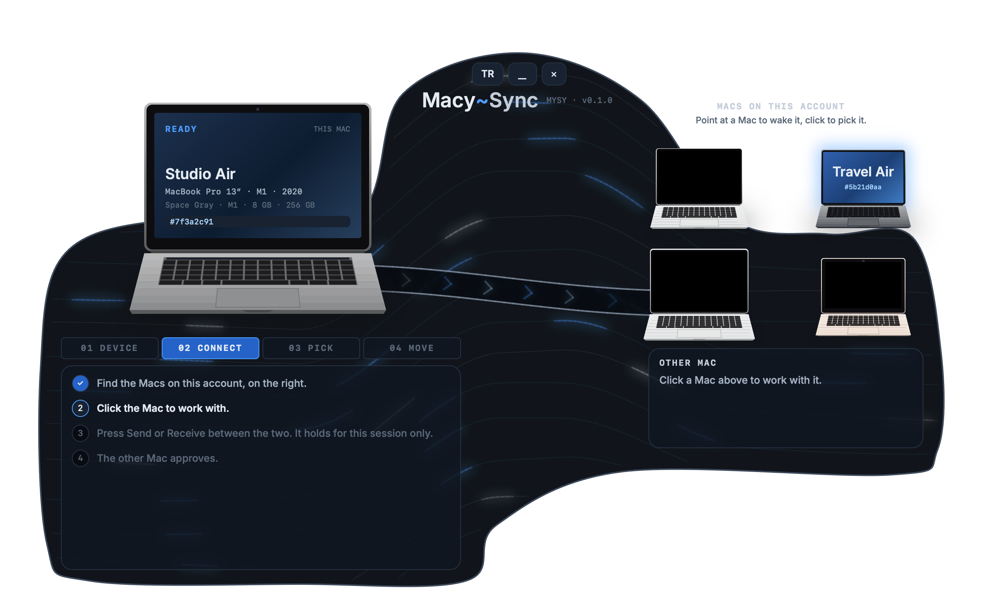
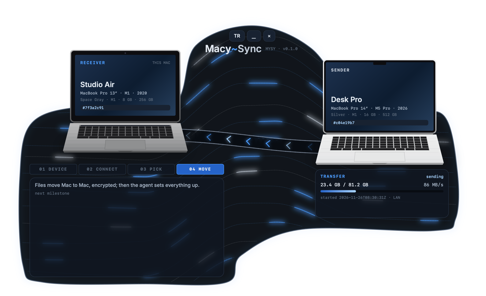

İki yöne de, oturum başına
Kurulumda belirlenen bir gönderen ya da alan Mac yok. Diğer Mac'i seç, sonra ikisinin arasında Gönder ya da Al'a bas. Penceredeki çizgiler iki ekranda da hep gönderenden alana akar ve seçim oturumla biter.

Hesabındaki Mac'ler
Bu hesaptaki Mac'leri bul, bus deponda kayıtlı her Mac'i ekranı kapalı küçük bir laptop olarak listeler. Birinin üstüne gel, ekranı adıyla yansın; tıkla, büyüyüp yerine geçsin, diğerleri kaybolsun.

Evet demeden hiçbir şey taşınmaz
İstek, diğer Mac'in sahibi onaylayana kadar orada bekler. Her Mac'in kendi anahtar çifti var; bir istek kimin istediğini, hangi yöne ve ne zaman olduğunu taşır.

Yalnızca seçtiklerin, doğrudan karşıya
Gönderen sunabileceklerini tarar: ayarları ve verileriyle uygulamalar, dotfile'lar, anahtarlar, klasörler, Homebrew ile kurulanların Brewfile'ı. Alan istediklerini işaretler ve yalnızca onlar gider; ağın ya da Tailscale üzerinden, doğrulanmış şifreli bir akışla. Kopan bir bağlantı yalnızca o an gidendeki öğeyi kaybeder.

Her şeyi bir ajan kurar
Dosyalar hiçbir şeyin üzerine yazmadan yerine iner, tercih dosyaları içe aktarılır, sonra yeni Mac AGENTS.md ve GOAL.md yazar ve seçtiğin ajanı başlatır. Tailscale ya da uzak masaüstü uygulamaları gibi bir kimliğe bağlı uygulamalar kopyalanmaz, yeniden giriş için işaretlenir.
